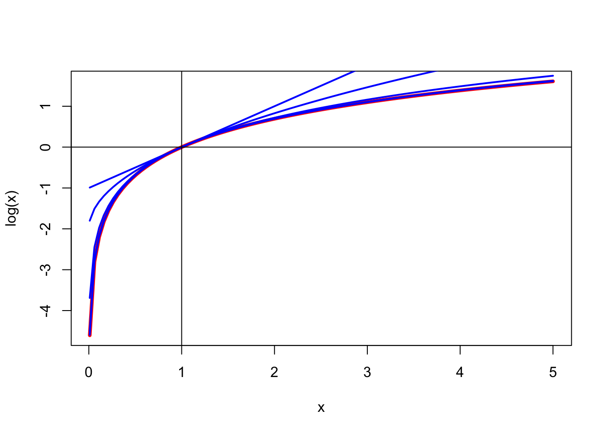

22 fstress and rstress
22.1 fstress
Fstress is a straightforward generalization of stress. Suppose \(f\) is any non-decreasing real-valued function, and define
\[\begin{equation} \sigma_f(X):=\mathop{\sum\sum}_{1\leq i<j\leq n}w_{ij}(f(\delta_{ij})-f(d_{ij}(X)))^2 (\#eq:fstress) \end{equation}\]
We discuss various specific examples in this chapter, such as the square and the logarithm, but let’s first mention some general results.
22.1.1 Use of Weights
Suppose the \(d_{ij}(X)\) are close to the \(\delta_{ij}\), so that we have a good fit and a low stress. Then the approximation
\[\begin{equation} f(d_{ij}(X))\approx f(\delta_{ij})+\mathcal{D}f(\delta_{ij})(d_{ij}(X)-\delta_{ij}) (\#eq:wfapprox) \end{equation}\]
will be close. Thus
\[\begin{equation} \sigma_f(X)\approx\mathop{\sum\sum}_{1\leq i<j\leq n}w_{ij}(\mathcal{D}f(\delta_{ij}))^2(\delta_{ij}-d_{ij}(X))^2. (\#eq:wfstress) \end{equation}\]
Thus we can approximately minimize fstress by minimizing stress with weights \(w_{ij}(\mathcal{D}f(\delta_{ij}))^2\). If the fit is good, we can expect to be close. If the fit is perfect, the approximation is perfect too. Note that we do not assume that \(f\) is increasing, i.e. that \(f'\geq 0\).
22.1.2 Convexity
\[ f(g(\lambda x + (1-\lambda)y))\leq f(\lambda g(x)+(1-\lambda)g(y))\leq\lambda f(g(x))+(1-\lambda)f(g(y)) \] Thus if \(g\) is convex (for instance distance) and \(f\) is convex and increasing then \(f\circ g\) is convex (and thus stress is DC). Unfortunately a concave \(f\) is more interesting.
22.2 rStress
\[\begin{equation} \sigma_r(X):=\mathop{\sum\sum}_{1\leq j<i\leq n}w_{ij}(\delta_{ij}^r-d_{ij}^r(X))^2. (\#eq:rstress) \end{equation}\]
In definition @ref(eq:rstress) we approximate the r-th power of the dissimilarities by the r-th power of the distances. Alternatively, we could have defined
\[\begin{equation} \sigma_r(X):=\mathop{\sum\sum}_{1\leq j<i\leq n}w_{ij}(\delta_{ij}-d_{ij}^{r}(X))^2 (\#eq:rstressalt) \end{equation}\]In definition @ref(eq:rstress) we are still approximating the dissimilarities by the distances, as in basic MDS, but we are defining errors of approximation as the differences between the r-th powers. In definition @ref(eq:rstressalt)
I am not sure which of the two formulations is the more natural one. I am sure, however, that for basic MDS the two formulations are effectively the same, because we can just define dissimilarities in @ref(eq:rstressalt) as the r-th power of the ones in @ref(eq:rstress). And in ordinal MDS the two formulations are the same as well, because the rank orders of the unpowered and powered dissimilarities are the same.
22.2.1 Using Weights
\[ d_{ij}^{2r}(X)-\delta_{ij}^{2r}= (d_{ij}^{r}(X)+\delta_{ij}^{r})(d_{ij}^{r}(X)-\delta_{ij}^{r}) \]
If \(\delta_{ij}\approx d_{ij}(X)\) then \[ (d_{ij}^{2r}(X)-\delta_{ij}^{2r})^2\approx 4\delta_{ij}^{2r}(d_{ij}^{r}(X)-\delta_{ij}^{r})^2 \] If \(r\) is a power of 2 ==>
22.2.2 Minimizing rstress
rstress, qstress, power stress
Groenen and De Leeuw (2010) De Leeuw (2014) De Leeuw, Groenen, and Mair (2016b) De Leeuw, Groenen, and Mair (2016c) De Leeuw, Groenen, and Mair (2016a)
22.3 mstress
The loss function used by by Ramsay (1977) in his MULTISCAL program for MDS can be written as
\[\begin{equation} \sigma_0(X):=\mathop{\sum\sum}_{1\leq i<j\leq n}w_{ij}(\log\delta_{ij}-\log(d_{ij}(X)))^2. (\#eq:mstress) \end{equation}\]
To justify the notation \(\sigma_0\) we define \(f_r\), for all \(x>0\) and \(r<1\), by \(f_r(x):=r^{-1}\frac{x^r-1}{r}\). \(f_r\) is concave for all \(r\), it majorizes the log because \(f_r(x)\geq\log(x)\) for all \(x\), with equality iff \(x=1\), and
\[\begin{equation} \lim_{r\rightarrow 0}\frac{x^r-1}{r}=\log x. (\#eq:loglim) \end{equation}\] We have drawn the logarithm, in red, and \(f_r\) for \(r\) equal to 0.001, 0.01, 0.1, 0.5, 1 over the interval \([.01,5]\) in the figure that follows.
For \(r=.001\) and \(r=.01\) the logarithm and \(f_r\) are practically indistinguishable, and even for \(r=.1\) we have an approximation which is probably good enough (in the given range) for most practical purposes.
Using the approximation of the logarithm with small \(r\) gives
\[\begin{align} \begin{split} \sigma_0(X)&\approx \mathop{\sum\sum}_{1\leq i<j\leq n}w_{ij}(\delta_{ij}-\frac{d_{ij}^r(X)-1}{r})^2\\ &=r^{-2}\mathop{\sum\sum}_{1\leq i<j\leq w_{ij}}((r\delta_{ij}+1)-d_{ij}^r(X))^2. \end{split} (\#eq:strapp) \end{align}\]
If \(r\) is really small both \(r\delta_{ij}+1\) and \(d_{ij}^r(X)\) will be very close to one, which will make minimization of the approximation difficult. A simple suggestion is to start with the SMACOF solution for \(r=1\), then use that solution for \(r=1\) as a starting point for \(r=\frac12\), and so on.
Alternative ?
\[ \log d_{ij}(X)-\log \delta_{ij}\leq \frac{\{\frac{d_{ij}(X)}{\delta_{ij}}\}^r-1}{r}=\frac{d_{ij}^r(X)-\delta_{ij}^r}{r\delta{ij}^r} \] \[ \log d_{ij}(X)-\log d_{ij}(Y)\leq \frac{\{\frac{d_{ij}(X)}{d_{ij}(Y)}\}^r-1}{r}=\frac{d_{ij}^r(X)-d_{ij}^r(Y)}{rd_{ij}^r(Y)} \]
22.4 astress
robust MDS (zho@u_xu_li_19) LAR (Heiser (1988))
\[ \sigma_{11}(X)=\mathop{\sum\sum}_{1\leq i<j\leq n}w_{ij}|\delta_{ij}-d_{ij}(X)| \] \[ |(\delta_{ij}-d_{ij}(X))+\epsilon|\leq\frac12\frac{((\delta_{ij}-d_{ij}(X))+\epsilon)^2+((\delta_{ij}-d_{ij}(Y))+\epsilon)^2}{|(\delta_{ij}-d_{ij}(Y))+\epsilon|} \] \[ \sigma_{rs}(X)=\mathop{\sum\sum}_{1\leq i<j\leq n}w_{ij}|\delta_{ij}^r-d_{ij}^r(X)|^s \]
22.5 pstress
The p in pstress stands for panic. We define
\[ \sigma(X):=\mathop{\sum\sum\sum\sum}_{(i<j)\leq(k<l)} w_{ijkl}(\delta_{ij}-d_{ij}(X))(\delta_{kl}-d_{kl}(X)), \] where \((i<j)\leq(k<l)\) means that index pair \((i,j)\) is lexicographically not larger than pair \((k,l)\).
Covariances/variances
How many of these weights \(w_{ijkl}\) are there ?
\[ \frac12\binom{n}{2}(\binom{n}{2}+1)=\frac18 n(n-1)(n^2-n+2) \]
No reason to panic. Again, majorization comes to the rescue (Groenen, Giaquinto, and Kiers (2003)). Suppose there is a \(K>0\) and a hollow, symmetric, non-negative \(\Omega\) such that \[ \mathop{\sum\sum\sum\sum}_{(i<j)\leq(k<l)} w_{ijkl}z_{ij}z_{kl}\leq K\mathop{\sum\sum}_{1\leq i<j\leq n}\omega_{ij}z_{ij}^2. \] Often the form of the weights \(w_{ijkl}\) will suggest how to choose \(K\). In the worst case scenario we choose \(\Omega=E-I\) and compute \(K\) by the power method. If all \(w_{ijkl}\) are equal to one, then ref becomes \[ \frac12\left\{\mathop{\sum\sum}_{1\leq i<j\leq n}z_{ij}\right\}^2+ \mathop{\sum\sum}_{1\leq i<j\leq n}z_{ij}^2\leq K\mathop{\sum\sum}_{1\leq i<j\leq n}\omega_{ij}z_{ij}^2. \]
\[ \sigma(X)\leq\sigma(Y)+2\sum \theta_{ij}(d_{ij}(Y)-d_{ij}(X))+K\sum \omega_{ij}(d_{ij}(Y)-d_{ij}(X))^2 \]
with (modify slightly !!)
\[ \theta_{ij}=\mathop{\sum\sum}_{1\leq k<l\leq n}w_{ijkl}(\delta_{kl}-d_kl{Y}) \]
\[ \Phi(\Delta,D(X)) \]